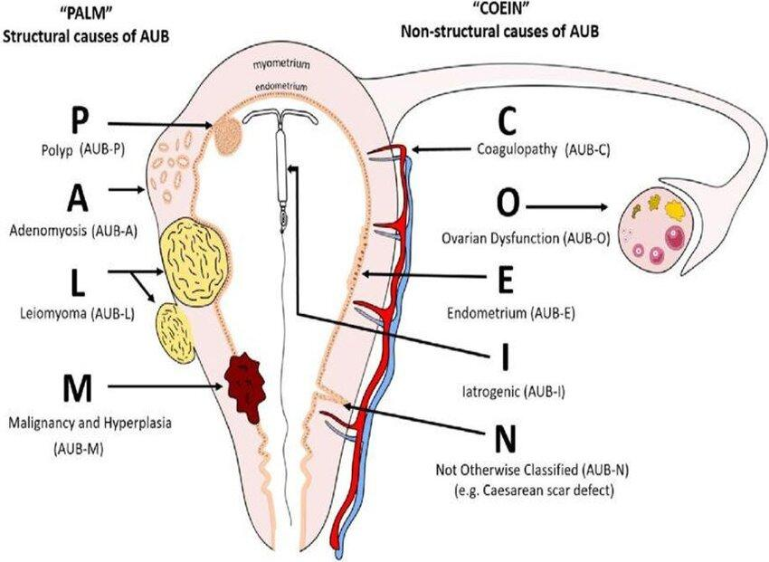
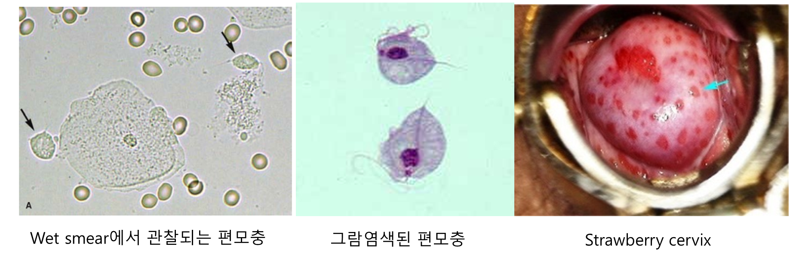

39. 질 분비물/질 출혈
환자의 연령과 성생활을 고려하여 질 분비물/질 출혈의 원인을 구별
원인 | ||||
생리적(정상) 질 분비물 혹은 질 출혈 | 분비물: 배란기, 임신 중, 성적 흥분 시 늘어남 출혈: 배란혈, 착상혈 | |||
감염 | 진균- 칸디다 질염 세균- 세균성 질증 기생충- 트리코모나스 질염 | |||
염증/신생물 | 위축성 질염(염증): 폐경 후 에스트로겐 감소하면서 질 점막이 얇고 메말라 발생 신생물(종양): 자궁경부암, 자궁내막암, 자궁근종, 폴립 | |||
기타 | 이물질(피임 기구, 탐폰), 손상(외상, 성관계) | |||
에스트로겐, 프로게스테론 이상에 의한 질 출혈 | 무배란성 출혈: 스트레스나 PCOS 등으로 배란이 안 되면, 에스트로겐만 계속 분비 외부 호르몬 영향: 경구피임약, 혹은 자궁 내 피임장치 | |||
사춘기 호르몬 변화에 따른 질 출혈 | 초경 전후의 HPO axis 미성숙 | |||
평가목표 1) 병력청취와 신체진찰로 생리적 혹은 질병에 의한 것인지 구분 2) 질 분비물의 특성에 따른 원인을 추정, 성 접촉성 질환 여부를 감별 3) 치료가 필요한 환자를 감별 | ||||
구체적인 성과 | ||||
병력 청취
| 요로 감염과 질 감염 감별 | 배뇨 증상에 대해 질문 FUND HISR | ||
| 원인균에 따라 특징적인 질 분비물의 특성 확인 | 칸디다 질염 (진균): 우유 찌꺼기, 치즈 같은 분비물, 외음부 소양감 세균성 질증 (세균): 묽고 회백색, 생리 직후나 성관계 후 생선 비린내 트리코모나스 (기생충): 거품, 황녹색 분비물, 악취, 화끈거림 | ||
| 유발 요인, 악화 요인 | 면역 저하(당뇨병)- 칸디다 질염 질 세정제 과다 사용- 세균성 질염 성관계력(새로운 사람, 콘돔 미사용)- 트리코모다스 질염 | ||
| 골반 내 감염 소견 | 하복부 통증, 발열, 오한, 성교통 | ||
| 연령에 따른 호르몬 이상에 의한 질 출혈 | 사춘기: HPO axis 미성숙에 의한 무배란성 출혈, 스트레스, 운동, 다이어트 가임기: PCOS, 갑상선, 고프로락틴혈증, 스트레스, 운동 페경이행기: 난소 기능 저하에 따른 무배란 폐경기: 외인성 호르몬 | ||
신체 진찰 | 비뇨생식기 진찰 | 외음부 시진- 부종, 긁힌 자국, 상처, 피부병변 질경 검사- 분비물 양상, 자궁경부 관찰, 위축성질염 골반내진- 자궁경부 이동 통증, 자궁 크기, 압통, 덩이 | ||
| 복부 진찰 | 시진, 청진, 타진, 촉진(suprapubic 포함하여 5군데), CVAT | ||
진단 및 치료 | 질 분비물 검사 결과 해석 | 현미경: 세균성- clue cell, 트리코모나스- 편모충 KOH 도말: 칸디다- 균사/포자, 세균성- 생선 비린내(Whiff test +) pH: 정상/칸디다- 4.5미만, 세균성/트리코모나스- 4.5이상 | ||
| 원인 질환 감별 | 세균성 질염 | 질분비물검사, Whiff test, 배양 | Metronidazole |
|
| 편모충 질염 | 질분비물검사, 배양 | Metronidazole (파트너도) |
|
| 칸디다 질염 | 질분비물검사, 배양 | 항진균제 (-azole) |
|
| 자궁경부염 | 질분비물검사, 그람염색, 배양 | 항생제 (Ceftriaxone+Doxycycline) |
|
| 골반염 | 혈액검사, 질분비물검사, 골반초음파 | 항생제 (Ceftriaxone+Doxycycline) |
|
| 위축성 질염 | 질분비물검사, 자궁경부세포검사 | 국소 에스르로겐 크림 |
환자교육 | 성병 및 비감염성 질염의 예방 | 성병 예방: 콘돔 사용, 성 파트너 동시 치료, 치료 중 성관계 금지 비감염성 질염 예방: 통풍이 잘 되는 옷, 올바른 외음부 세척 습관, 배변 후 닦는 방향, 위축성 질염의 경우 보습제, 에스트로젠 크림 | ||



질환 | 질환 설명 | 병력청취 | 신체진찰 | 검사 | 치료 | |
질 분비물 | 세균성 질염 3+1 | 질 내 세균총의 불균형 | 생선 비린내 나는 회색 질분비물 | 질벽에 회백색 분비물 | 질분비물검사, 배양, 그람염색 | Metronidazole PO 또는 겔 |
| 편모충 질염 1 | 트리코모나스 원충 감염 | 악취 나는 노란색/초록색 화농성 질분비물 | 딸기모양 자궁경부
| 질분비물검사, 배양, STD PCR | Metronidazole PO (파트너 치료) |
| 칸디다 질염 1 | 질 내 상재 진균 칸디다가 면역저하로 증식 | 우유 찌꺼기, 치즈 형태의 질 분비물 화끈거림, 가려움, 배뇨통 Hx: 당뇨병 | 치즈 형태의 질 분비물
| 질분비물검사, 배양 | Fluconazole PO 또는 국소 항진균제
|
| 자궁경부염 0+1 | 임균, 클라미디아 등 성매개 병원체가 자궁경부에 침투 | 노란색/초록색 질 분비물, 성관계 후 출혈, 위험한 성관계 | 자궁경부 부종, 발적, 화농성 분비물 내진 시 통증 | 질분비물검사, 배양, 그람염색, STD PCR | 항생제(세프트리악손 + 독시사이클린) |
| 골반염 | 질, 자궁경부에 감염된 병원균이 상행 감염을 일으킴 | 하복부 통증, 발열, 배뇨통, 오심, 구토, | 하복부 압통, 고열, 내진시 자궁경부 운동 압통 | 질분비물검사, 혈액검사, 골반초음파 | 안정, 수액, 진통제, 항생제(세프트리악손 + 독시사이클린) |
| 위축성 질염 3+1 | 폐경 후 에스트로겐 고갈로 메말라짐 | 폐경기 증상(안면홍조, 식은땀), 성교통, 성교 후 출혈 | 주름이 소실된 창백한 질 점막 점상 출혈, 건조 | 질분비물검사, 자궁경부세포검사 | 에스트로겐 크림 |
질출혈 | 기능성 자궁 출혈 1+1 | 기질적 병변 없이, HPO axis 이상으로 발생 | 기질적 원인 없음, 초경 직후나 폐경 직전 여성, 스트레스, 급격한 체중 변화 | 특이 소견 없음 | 혈액검사(호르몬), 골반초음파 | 경구 피임약으로 주기 조절, 유발 요인 교정 |
| 호르몬 제제 | 호르몬 투여로 자궁내막 증식 탈락 주기 교란 | 경구 피임약 복용 초기나 복용 중단 | 특이 소견 없음 | 혈액검사(호르몬), 골반초음파) | 약을 빼먹지 않도록 교육. 부정 출혈이 지속되면 변경 |
| 다낭성 난소 증후군 1 | HPO axis 이상으로 배란이 안되면서 E만 지속 분비, 출혈발생 | 희발월경 혹은 무월경 끝에 나타나는 다량의 출혈 | 다모증, 여드름, 비만 | 혈액검사(호르몬), 골반초음파 | 체중감량 및 운동, 피임약(주기조절), 배란 유도제(임신희망) |
| 갑상샘 저하증 | 호르몬 불균형으로 비정상 출혈 유발 | 생리 주기가 길어지거나 양이 많아지는 월경 과다 갑상샘저하 증상 | 갑상샘 비대, 피부 건조, 무기력 | TFT | 갑상샘 호르몬 보충 |
| 응고질환 | 지혈 기전의 이상으로 월경 과다가 발생 | 만성적인 월경 과다, 멍이 잘 듦, 잇몸 출혈 | 멍, 점상출혈 | 혈액응고검사 | 내과적 치료 |
| 자궁근종 2+1 | 자궁 평활근 세포에서 기원하는 가장 흔한 양성 종양 | 생리통, 근종이 클 경우 빈뇨나 변비 유발 | 하복부의 단단하고 경계가 명확한 종괴, 자궁 커짐 | 골반초음파, 골반 MRI | 추적 관찰, GnRH agonist, 근종절제술, 자궁절제술 |
| 자궁선근증 1 | 자궁내막의 조직이 자궁 근육층 내로 비정상적으로 침투하여 증식 | 40대 이상에서 흔하며, 생리량이 많아짐, 극심한 생리통 | 자궁 전반적으로 커짐, 진찰 시 압통 | 골반초음파, 골반 MRI | 소염진통제, LNG-IUD, 자궁절제술 |
| 자궁경부암 1 | HPV 지속 감염에 의해 자궁경부에 발생하는 악성 종양 | 성관계 후 출혈, 악취 나는 질 분비물 | 자궁경부 종괴, 악취가 나는 분비물, 접촉 시 쉽게 피가 남 | 자궁경부세포검사, HPV 검사, 질확대경검사, 조직검사 | 원추절제술, 자궁절제술, 방사선, 항암치료 |
| 자궁내막암 | 자궁내막 선상피에서 발생하는 악성 종양 | 폐경 후 질출혈, 고령, 비만, 당뇨, 출산안함, 이른 초경, 늦은 폐경 | 초기에는 대개 정상, 진행된 경우 자궁 비대, 고정된 느낌 | 골반초음파, 자궁내막 흡인 생검, D&C | 수술, 방사선, 항암 |
| 자궁외임신 | 수정란이 자궁내막이 아닌 비정상적인 위치에 착상 | 무월경, 하복부 통증, 파열 시 극심한 복통, 어지럼증, 빈맥 | 하복부 압통, 반발 압통, 자궁경부 이동 압통 | 임신반응검사, 혈액 hCG, 골반초음파 | 수술, MTX |
| 유산 | 임신 20주 이전에 태아가 생존력을 갖기 전에 임신이 종결 | 임신 초기, 하복부 통증 | 자궁경부 개대(불가피, 불완전) | 혈액 hCG, 골반 초음파 | 철박유산- 안정 불완전- D&C, 약물 |
질분비물
O | 언제, 갑자기/서서히, 어떤 상황 | ||
L | - | ||
D | 얼마나 자주? | ||
Co | 점점 심해지나요? | ||
Ex | 이전에도 이런 적이 있나요? 치료는 받았나요? | ||
C | 양상 - 성상(콧물/꾸덕/덩어리)/양/색(노란색/초록색/하얀색)/냄새(악취/비린내)/거품/피 | ||
F | [월경력] 월경여부/월경량/월경통/LMP/임신가능성 [산과력] 결혼/자녀/분만형태 [성관계] 성교통/성관계 전후 질분비물, 출혈/성파트너수 -> 파트너도 같은 증상? [피임] 어떤 방법으로 (피임약/자궁내장치) [질세척] 주 몇 회, 무엇으로 | ||
A | 전신 + 부인과(외위) + 소화/비뇨 [전신] 발열/오한/체중변화/피로 [외음부] 가려움증/화끈함/따가움 r/o 칸디다, 위축성, PID [위축성] 식은땀/안면홍조/야간발한/질건조 [골반염] 오심/구토/L에서 물어볼 수 있으면 먼저 물어보기 → 하복부 통증 [방광염-비뇨] 소변 누시는 건 어떠세요? → 빈뇨/절박뇨/아간뇨/배뇨통 | ||
E | 산부인과 검진, 가다실 | ||
외 | 복부, 외음부 외상/부인과 시술 | ||
과 | 과거에 진단받은 질병- 고혈압/당뇨/간염/결핵 + 골반염/방광염 | ||
약 | 복용중인 약물? 피임약/호르몬제/스테로이드 | ||
사 | 음주/흡연/커피/직업/스트레스/식습관/운동 | ||
가 | 부인과질환, 암(자궁/난소/유방) | ||
여 | - | ||
PEx | 기본
| V/S 확인 (혈압, 맥박, 호흡수, 체온) 1 눈 : 빈혈, 황달 2 입 : 탈수 3 손 : 피부 긴장도 | |
| 복부 | 1 복부: 시-청 (1군데 당 3-5초)-타 (먼 곳부터)-촉(먼 곳부터) **Suprapubic area까지 5군데 수행 2 CVAT 3 골반내진검사 | |
| 하이브리드: 질분비물검사 | ||
검사 | 기본 | 1 질분비물검사 2 배양검사 3 골반초음파 4 혈액검사 | |
치료 | 세균성 질염 | 질분비물검사, Whiff test, 배양, 그람염색 | 항생제 (Metronidazole) |
| 편모충 질염 | 질분비물검사, 배양 | 항생제 (Metronidazole)- 파트너도 |
| 칸디다 질염 | 질분비물검사, 배양 | 항진균제 (fluconazole) |
| 자궁경부염 | 질분비물검사, 그람염색, 배양 | 항생제 (Ceftriaxone+Doxycycline) |
| 골반염 | 혈액검사, 질분비물검사, 골반초음파 | 안정, 수액, 진통제, 항생제 (Ceftriaxone+Doxycycline) |
| 위축성 질염 | 질분비물검사, 자궁경부세포검사 | 국소 에스트로겐 크림 |
교육 | [안심]. 질염은 여성이라면 누구나 걸릴 수 있는 질환이며, 적절한 약물치료를 하면 대부분 낫기 때문에 크게 걱정하실 필요 없습니다. 감기같은 것 ~ [회피] 질염이 완전히 낫기 전까지는 성관계는 피하시는 것이 좋겠습니다. 잦은 질세척은 질 내부의 환경 유지에 좋지 않으며, 세균질증의 원인이 될 수 있습니다. 횟수는 일주일에 2-3회 정도가 적당합니다. 또한 비누를 사용하지 마시고, 질 세정제를 사용하세요. 건강을 위해 술과 담배는 끊으시는 것이 좋습니다. 너무 꽉 끼는 속옷을 입는 것은 질에 좋지 않습니다. 또한 변을 닦을 때 앞에서 뒤로 닦는 습관을 들이시는 것을 권장드립니다. [교정] 공통- 성관계 전후로 소변을 보는 습관도 필요하며, 위생 관리를 잘해주세요. 당뇨- 환자분께는 당뇨 조절이 중요하므로 당뇨약도 규칙적으로 챙겨드시고, 식사 조절과 운동을 함께 병행하는 것이 좋습니다. 자궁경부염/편모충- 남편분/성관계 파트너 분의 치료도 동시에 시행되어야 합니다. STD면 파트너 치료 [검진] 별다른 이상이 없다고 하더라도 정기적인 산부인과 검진을 권고해 드립니다 | ||
질출혈
O | 언제, 갑자기/서서히, 어떤 상황 | ||
L | - | ||
D | 얼마나 자주? | ||
Co | 점점 심해지나요? | ||
Ex | 이전에도 이런 적이 있나요? 치료는 받았나요? | ||
C | 양/색/냄새/거품/핏덩이/분비물 [월경력] 초경 + 월경여부/규칙적/월경량/월경통/LMP/임신가능성 [산과력] 결혼/자녀/분만형태, [성관계] 성교통/성관계 전후 질분비물, 출혈/성파트너수 [피임] 어떤 방법으로 (피임약/자궁내장치) [질세척] 주 몇 회, 무엇으로 | ||
A | 응출전 + 내분비(피갑) + 소화/비뇨 [응급] 어지러움/두근거림 [출혈] 쉽게 멍이 듦/피가 잘 안 멎음. [전신] 발열/오한/체중변화/피로 [갑상샘저하] 추위불내성/변비 [PCOS] 여드름, 다모증, 비만 + 키체중 [Mass effect] F/U/N/D/변비/복부덩이 | ||
F | 월경주기와의 관련성 | ||
E | 산부인과 검진, HPV 백신접종(가다실) | ||
외 | 복부, 외음부 외상/부인과 시술 | ||
과 | 과거에 진단받은 질병- 고혈압/당뇨/간염/결핵 + 골반염/방광염 | ||
약 | 복용중인 약물? 피임약/호르몬제 | ||
사 | 음주/흡연/커피/직업/스트레스/식습관/운동 | ||
가 | 부인과질환, 암(자궁/난소/유방) | ||
여 | - | ||
PEx | 기본
| V/S 확인 (혈압, 맥박, 호흡수, 체온) 1. 눈 : 빈혈, 황달 2. 입 : 탈수 3. 목: 갑상샘 촉진 4. 손 : 피부 긴장도 | |
| 복부 | 5. 복부: 시-청 (1군데 당 3-5초)-타 (먼 곳부터)-촉(먼 곳부터) **Suprapubic area까지 5군데 수행 6. CVAT 7. 골반내진검사 | |
| 하이브리드: 자궁경부펴바름검사 | ||
검사, 치료 | 기본 | 1. 혈액검사 (호르몬, TFT) 2. 골반초음파 3. 골반 MRI 4. 임신반응검사 (가임기 여성만) | |
| 기능성 | 호르몬검사, 골반초음파 | 경구피임약, 철분제 |
| 갑상샘 | 갑상선기능검사, 자가항체검사, 골반초음파 | 갑상샘 호르몬제 |
| PCOS | 골반초음파, 호르몬 검사 | 배란유도제, 경구피임약 |
| 자궁근종 | 골반초음파, 자궁난관조영술, 호르몬 검사 | 경과관찰, 약물치료(진통제, 피임약), 수술 |
| 자궁선근증 | 골반초음파, 골반 MRI, 혈액검사 | 진통제, 경구피임약, 자궁내장치, 자궁절제술 |
| 자궁경부암 | 자궁경부세포검사, 골반초음파 | 수술, 항암치료 |
교육 | [안심]. 출혈이 있어서 많이 놀라셨을 것 같습니다. 꾸준히 관리하면 조절되는 질환이니 크게 걱정하지 않으셔도 됩니다. [응급] 만약 갑자기 극심한 복통이 생기거나, 숨이 참, 두근거림 등이 나타난다면 응급 상황이니 즉시 병원으로 내원하셔야 합니다. [기능성] 기능성 자궁출혈은 과로와 스트레스가 주원인입니다. 충분한 휴식을 취하시고 규칙적인 생활을 하시는 것이 호르몬 균형에 큰 도움이 됩니다. [자궁근종/선근증] 자궁에 생긴 양성 혹 때문입니다. 당장 수술이 급하지 않더라도 크기가 커지는지 6개월~1년마다 정기적으로 초음파 검사를 받아야 합니다. [PCOS] 이 질환은 호르몬 불균형과 인슐린 저항성이 원인입니다. 체중을 5~10%만 감량해도 정상 배란이 돌아오는 경우가 많으니 식단 조절과 운동을 병행해 주세요. [경구피임약] 편두통/고혈압/간질환/흡연(35세 이상) 파악 필요 → IUD 시행 경구 피임약은 매일 같은 시간에 복용하는 것이 가장 중요합니다. 하루를 빼먹었다면 생각난 즉시 한 알을 드시고, 다음 알은 예정대로 드세요 [검진, 접종] 오늘 시행한 검사 결과는 며칠 뒤에 나옵니다. 별다른 이상이 없다고 하더라도 정기적인 산부인과 검진을 권고해 드립니다. 앞으로는 국가 암 검진을 거르지 말고 꼭 받으셔야 하며, 인유두종 바이러스(HPV) 백신 접종도 도움이 됩니다 | ||
[악성 가능성을 배제할 수 없을 때]
오늘 진찰 결과와 환자분께서 말씀해주신 증상들을 종합해볼 때, 현재 나타나는 출혈의 원인이 단순한 염증이나 호르몬 불균형 때문이라고만 단정 짓기는 어려운 상황입니다. 특히 폐경 이후에 다시 출혈이 보이거나, 또는 성관계 후 반복적인 출혈이 있는 점은 주의 깊게 살펴봐야 하는 부분입니다. 물론 지금 바로 어떤 질환이라고 확정 지어 말씀드릴 수는 없지만, 드물게 나타날 수 있는 자궁경부암이나 자궁내막암 같은 심각한 질환의 가능성을 확실히 배제하는 과정이 반드시 필요합니다. 따라서 육안 진찰만으로는 한계가 있어, 조금 더 정확한 확인을 위해 오늘 바로 조직검사를 진행하고자 합니다. 검사 결과가 나오기까지 며칠 간은 많이 초조하고 불안하시겠지만, 가장 좋지 않은 원인을 먼저 확인하고 대비하는 것이 환자분의 건강을 지키는 가장 안전하고 확실한 방법입니다. 결과가 나오는 대로 숨김없이 상세히 설명해 드릴 테니, 너무 미리 걱정하시기보다 저와 함께 정확한 원인을 찾는 과정에 협조해주시길 부탁드립니다.